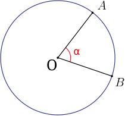
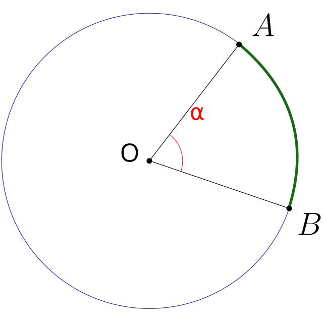

Entre com a medida do raio(
Um ângulo central é um ângulo cujo vértice se encontra no centro da circunferência.
Duas semirretas o compõem e interceptam a circunferência em dois pontos distintos.

O ângulo central entre A e B determina um arco
O comprimento do arco, é a distância percorrida sobre a circunferência de A até B. Sua medida é igual à do próprio ângulo central multiplicada pelo tamanho do raio da circunferência:
